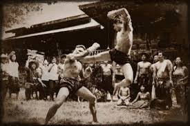

A História do Muay Thai
O Muay Thai, também conhecido como a "arte das oito armas", é uma arte marcial tradicional da Tailândia. Sua origem remonta há mais de mil anos, quando era utilizado como técnica de combate pelos guerreiros tailandeses. Ao longo dos séculos, o Muay Thai evoluiu de uma prática militar para um esporte competitivo e uma forma de autodefesa.
Durante o período de paz na Tailândia, o Muay Thai tornou-se uma forma de entretenimento e foi incorporado em festivais e celebrações. Com o passar do tempo, as regras foram formalizadas, e o esporte ganhou popularidade internacional, sendo reconhecido como uma das artes marciais mais eficazes e respeitadas do mundo.
Hoje, o Muay Thai é praticado por milhões de pessoas em todo o mundo, tanto como esporte quanto como uma forma de manter a saúde física e mental. Ele continua a ser uma parte importante da cultura tailandesa e um símbolo de disciplina, respeito e força.